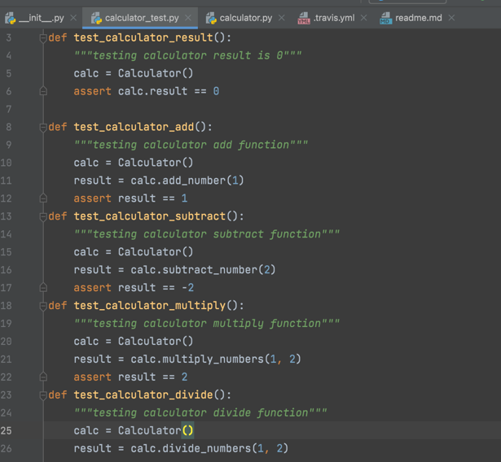

While learning python, it's important to understand the use of pylint tool. This is a tool that allows programmer to check their python code for errors. There are other types of tests done in python or coding in general, such as unit test or end-to-end testing, but pylint tool is easier and shorter to read, along with re-usability and no connections to sites like travis, that are needed. It is often used to enforce a coding standard and looks for deeper issues within the code. How-ever it is important to note, that while pylint is a great tool for checking codes and errors, it is still useful to gp back and review. So how does pylint work with AAA testing?

In the diagram above you can see the basics of how AAA testing works. The first part is to arrange the code, set up the code to create object and instances, and creating data or inputs. The second portion is to execute the code by calling the methods and set the properties. The last part is to test the code by checking the results. In the next example, we will see real life implementation of AAA testing, using a calculator that we created in python with testing. So, now that we understand how AAA testing works like focus on testing, both unit and pylint. To understand how linting works, lets look at our calculator example. In the picture below I added my entire simple calculator code is shown. For the entire repository, the link will be added to the footer below.
Unit Testing with Our Calculator Codes
In the example above, we have the format of Arrange, Act and Assert. In this format the arrange is where we set up the objects that will be tested. Now lets take a look at a snippet of the calculator, particularly the addition method, so we can analyze how we arranged the AAA method.

This includes the addition function of the calculator, we then had an act which calls the addition method, and we assert that the sum is 4, which is the sum. Now to test the code for bugs or problems we would go to the terminal and type "pytest". Once we hit enter, the test would run. If there are no issues, the pytest should come out as 100%.
The above pytest was 100%, meaning that there are no problems. The arrangement of the code is correct, the class, the methods, and the attributes are all correct. We also had the correct action, which was importing from the calculator and testing addition, subtraction, multiplication and division, and our assertions about the outcomes are also correct. However, there are times when the pytest does not pass. Usually the error would look like this:
So here, for starters the problem is in our arrangement. The first portion of the AAA is arrangement, so we should have a class with objets and methods. In this case we do have that. However lets us check the structure, is the structure correct? Well we have class up top (which is not seen on this picture, but for my complete calculator I will link my repository below), we also have the def function. Now the arrangement part underneath the definition function we arranged by instantiating the results that should show up for testing. Well here is our problem, the error states that "AttributeError: 'tuple' object has no attribute 'values'", so we need to go back and check where our division class is getting it's functions, which is the calculation class. In the Calculation class:
Here if you noticed, we have an issue with the arrangement portion of the class. We have two methods a class method and a static method.The class method, like stated in the python page can effect the class, while the static method is attached to the class, but it's not going to modify the class. In this perticular case we do not need a class method, because it changed the entire class. So let's take away that method and see if we get the same issue. In doing that, although we still have errors in our calculator using pylint, the actual error of that line is gone. So we know the issue was in part due to the arrangement of our code in the calculation file. Using the same process of finding the errors like before we will go back and see each and every error that comes up and check the codes and their origins. If all is done correctly we should get a 100% as our pylint test like shown before.
CSV Files and External Testing
In this portion we will talk about using the Unit testing with external csv files. Remember the csv files are the alternate Excel files, these files are often used for coding because they are plain text and can be imported to another spreadsheet or data storage.
Since pycharm and python in general works very well with these kinds of files. In one of our calculator repositories, called part_4, we used this method. Hoever before we can even test the codes for it or even import the csv files in to the project, we need to do a few things. The first thing we must do is update our requirement text.
The requirement text, is what stores the libraries, packages, and modules, that will be used for developing the program. The requirement text we need to have in this part must have the requirement libraries for pytest. It is the same as our previous requirment text shown in the python tab. We also need to do pip install pandas. In my version of python, the command for intsalling pandas is using pip3.
So to install the pandas library, I used pip3 install pandas. The unit test is run on docker, so we cannot install the pandas file to the normal terminal so we must also update the Dockerfile to have the libraries that can be installed. It is important to note that sometimes we need to update the wheel, which is why many times pip install doesn't work.
That was the case in my own program, so I added the last code as an option in hopes that it works, this is the optional code RUN pip install --upgrade pip setuptools wheel. The over all docker file should look like this for pandas to be installed.
Once the docker text is updated and the files are installed. We import pandas using the code import pandas as pd as the very first line on top. This will import pandas in to the file and we can move on. The next thing we do is import a csv file. We created an addition file on excel, and saved it as csv. Once we saved the file on our computer, we copy and past the directory of the file in the utilities' folder we created in the project directory. Once we added the csv files, we also add excel files,for comparison.
Our excel files should throw us an error but our csv files will come up as lists on our program like this.